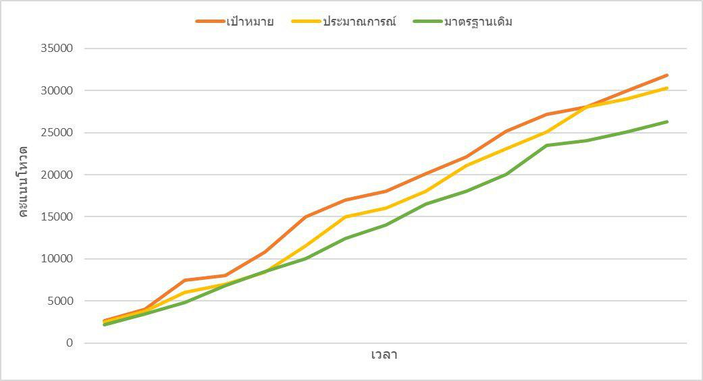

<!--
  Generated template for the InfoDetailPage page.

  See http://ionicframework.com/docs/components/#navigation for more info on
  Ionic pages and navigation.
-->
<ion-header>

  <ion-navbar color="danger">
    <ion-title>{{district.name}}</ion-title>
  </ion-navbar>

</ion-header>


<ion-content padding>

  <!--  -->

  <div style="display: block;">
    <canvas baseChart 
    width="50" 
    height="50" 
    [datasets]="lineChartData" 
    [labels]="lineChartLabels" 
    [options]="lineChartOptions"
    [colors]="lineChartColors" 
    [legend]="lineChartLegend" 
    [chartType]="lineChartType">
  </canvas>
  </div>

  <ion-grid>

    <ion-row>
      <ion-col col-4>คะแนนทั้งหมด</ion-col>
      <ion-col col-4 text-center>{{district.totalVote}}</ion-col>
      <ion-col col-4 text-center>100%</ion-col>
    </ion-row>

    <ion-row>
      <ion-col col-4>เป้าหมาย</ion-col>
      <ion-col col-4 text-center>{{district.goal}}</ion-col>
      <ion-col col-4 text-center>{{percentGoal}}%</ion-col>
    </ion-row>

    <ion-row>
      <ion-col col-4>คะแนนเสียง</ion-col>
      <ion-col col-4 text-center>{{district.vote}}</ion-col>
      <ion-col col-4 text-center>{{percentVote}}%</ion-col>
    </ion-row>

  </ion-grid>

  <ion-card>
    <ion-item class="itemB">
      <ion-row text-center>
        <ion-col>
          พรรค
        </ion-col>
        <ion-col>
          คะแนนเสียง
        </ion-col>
      </ion-row>
    </ion-item>
  </ion-card>

  <ion-row *ngFor="let party of district.PartyInDistricts" text-center>
    <ion-col>
      {{party.name}}
    </ion-col>
    <ion-col>
      {{party.vote}}
    </ion-col>
  </ion-row>
</ion-content>